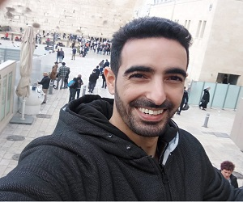

<mat-sidenav-container class="sidenav-container">
  <mat-sidenav
      #drawer
      class="sidenav"
      fixedInViewport
      [attr.role]="(isHandset$ | async) ? 'dialog' : 'navigation'"
      [mode]="(isHandset$ | async) ? 'over' : 'side'"
      [opened]="(isHandset$ | async) === false">
    <mat-toolbar>Menu</mat-toolbar>
    <mat-nav-list >
      <a class="avatar" href="#" routerLink="/about">
        <div class="avatar-img">
          
        </div>
        <div class="avatar-content">
          <h1>Shalom Pinchas</h1>
          <h2>Software Engineer Graduate</h2>
        </div>
      </a>
      <hr>
      <a mat-list-item href="#" routerLink="/projects">My Portfolio</a>
      <a mat-list-item href="#" routerLink="/contact">Contact</a>
      <a mat-list-item href="#" routerLink="/about">About</a>
    </mat-nav-list>
  </mat-sidenav>
  <mat-sidenav-content >
    <mat-toolbar >
      <span>
          <button
          type="button"
          mat-icon-button
          (click)="navBack()"
          *ngIf="isSubProjectRouteActive()">
          <i class="fas fa-arrow-left fa-3x"></i>
        </button>
      </span>
      <button
        type="button"
        aria-label="Toggle sidenav"
        mat-icon-button
        (click)="drawer.toggle()"
        *ngIf="isHandset$ | async">
        <mat-icon aria-label="Side nav toggle icon">menu</mat-icon>
      </button>

    </mat-toolbar>
    <!-- Add Content Here -->
    <ng-content #main></ng-content>
  </mat-sidenav-content>
</mat-sidenav-container>
